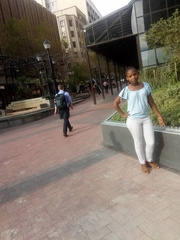
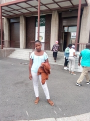

Church Square

- Church Square is a multi-layered space in the heart of Cape Town, with a long and complex history.
- It also includes the Slave Lodge, where thousands of slaves were housed, doubling up, for a time, as one of the Cape’s most well-known brothels.
- It is a place laden with painful memory, but it is also a place with exciting potential as a lively and engaging public space, one which honours and respects this shared history.
St'Georges Mall

In 1830, the street was known by the name of Eerste Berg Dwars Straat (First Mountain Cross street), mercifully shortened to Berg Street.
In 1830, the foundation stone was laid for the St George’s Church at the top of Berg Street was switched to St George’s Street.
Berg Street had been one of the first streets of the Cape settlement linking the seafront and the gardens.
Parliament of RSA

- It consisted of the House of Assembly and the Legislative Council.
- In 1910, the Union of South Africa was established, unifing the Cape Colony, the Natal Colony, the Transvaal Colony and the Orange River Colony.
- With the unification of South Africa came the establishment of a new parliament, the Parliament of South Africa.
- In 1961, the Republic of South Africa was established, severing its ties with the United Kingdom.